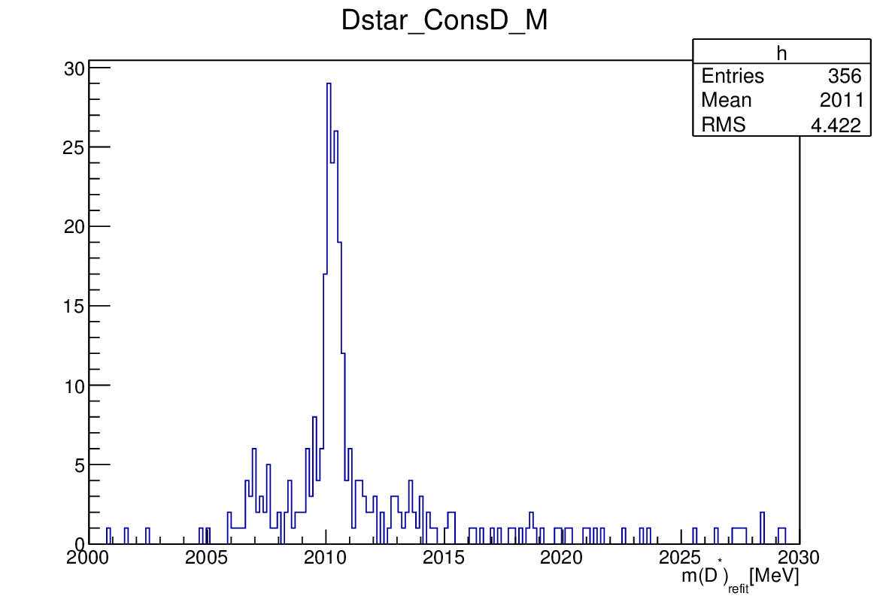
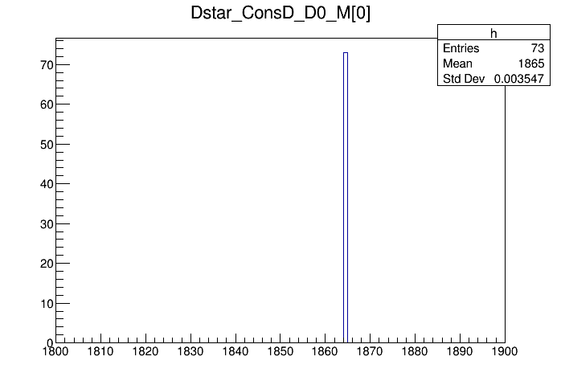

How do I use DecayTreeFitter?
Learning Objectives
- Add a kinematic fitter to a branch in the decay tree
- Apply a mass constraint
- Inspect the refitted decay tree
Once you have made a hypothesis on the chain of decays that lead to your final state, you then can incorporate the additional knowledge that comes with this hypothesis to get a new best estimate for the particle parameters -- in particular their momenta. The additional knowledge is represented as constraints, which your decay tree has to fulfill.
For example, for the decay
'[D*(2010)+ -> (D0 -> K- K+) pi+]CC'
you can make the assumption that the (K- K+) combine to form a D0 with a specific invariant mass. This results in a so called mass-constraint. In addition the two kaons should originate from exactly the same point in space. If you know that your data only contains prompt D candidates, you can constrain them to do come from the primary vertex. Boundary conditions like those are called vertex-constraints*.
Applying such kinematic constraints leads to new best estimates for the track parameters of the final state particles. The process of calculating those is called a kinematic refit and the TupleToolDecayTreeFitter is the algorithm that performs this task for us.
The physics and mathematics behind DecayTreeFitter
For details of the method see the paper on Decay chain fitting with a Kalman filter.
So how do we use a TupleToolDecayTreeFitter in our DaVinci script? Let's create a branch to add the tool to. We'll just name it 'Dstar':
dtt.addBranches({
'Dstar': '[D*(2010)+ -> (D0 -> K- K+) pi+]CC',
})
To this branch we can now apply the TupleToolDecayTreeFitter with arbitrarily chosen name consD.
dtt.Dstar.addTupleTool('TupleToolDecayTreeFitter/ConsD')
Now we can proceed with the configuration of the fitter. We are going to constrain the decay tree to the primary vertex of origin. We want all the output available, so we set the verbose option. Finally we want to apply the mass constraint to the D0:
dtt.Dstar.ConsD.constrainToOriginVertex = True
dtt.Dstar.ConsD.Verbose = True
dtt.Dstar.ConsD.daughtersToConstrain = ['D0']
Note that you can constrain more than one intermediate state at once if that fits your decay.
When using the DecayTreeFitter in a DecayTreeTuple, all the variables created by the other TupleTools are not affected by the change, but some new variables are created, one set per DecayTreeFitter instance. Depending on whether the Verbose option is specified, the new variables are created for the head particle only or for the head particle and its daughters too.
If the daughters are not stable particles and decay further, the daughters of the daughters have no new variables associated to them by default. Since in many cases this information might be useful, there is an option to store the information from those tracks
dtt.Dstar.ConsD.UpdateDaughters = True
DecayTreeFitter and LoKi functors
Alternatively, many of the operations described above can be done by using the
DecayTreeFitter via LoKi functors, see the DaVinci
tutorial for
details.
Which constraints to apply
It is important to be aware of the assumptions you make to build your ntuple. For
example, after you require the vertex constraint you must be careful if using
the IPCHI2_OWNPV, since the particle you are looking at is forced to point
to the PV. Which constraints make most sense for you depends on the questions
you want to ask in your analysis, so ask your supervisor/working group in case
of doubt.
Once you have produced your ntuple you can have a look at the refitted variables.
root -l DVntuple.root
TupleDstToD0pi_D0ToKK->cd()
DecayTree->StartViewer()
Plotting the raw mass of the D* (without the fit) Dstar_M, you should see a broad signal around 2 GeV:

Which mass variable to use
In many ntuples you also find a mass variable called _MM. This confusingly
refers to measured mass. However, it is usually better to use _M. _MM is
the sum of the 4-momenta of the final state particles extrapolated back to the
fitted vertex position, but not the result of the actual vertex fit.
Now let us look at the refitted mass of the D*, with the D0 constrained to its nominal mass. It is stored in the variable Dstar_ConsD_M. If you plot this you will note that some values are unphysical. So, let's restrict the range we look at to something that makes sense.
On the root prompt use the arrow-up key to get the last draw command and modify it to pipe the output into a histogram:
tv__tree->Draw("Dstar_ConsD_M>>h(200,2000,2030)","","");

Note that this plot has 356 entries, although we only have 128 candidates in the raw mass spectrum. The reason for this is that we typically have several primary vertices per event. When you use the vertex contraint, the fitter is run for each of the possible vertex hypotheses available in the event. So all the Dstar_ConsD-xxx variables are in fact arrays, where the first value corresponds to the best PV hypothesis. We can plot only those by doing
tv__tree->Draw("Dstar_ConsD_M[0]>>h(200,2000,2030)","","");
and we get the final kinematically refitted Dstar mass:

Finally, let's check how the D0 mass constraint has played out.
tv__tree->Draw("Dstar_ConsD_D0_M[0]>>h(100,1800,1900)","","", 128, 0);

As expected, the D0 candidates are forced onto their PDG mass value.
Explore
- Look at the
statusvariable to check if the fits converged. - Look at the chi2 distribution of the fit
DecayTreeFitter can be told to change some of the hypotheses in the decay tree. This is very useful if you want to slightly change which decays you want to look at. As an example let's say we want to examine the decay of the D0 into K- pi+ instead of K- K+. For this we add a second fitter, giving it a new name ConsDKpi:
dtt.Dstar.addTupleTool('TupleToolDecayTreeFitter/ConsDKpi')
dtt.Dstar.ConsDKpi.constrainToOriginVertex = True
dtt.Dstar.ConsDKpi.Verbose = True
dtt.Dstar.ConsDKpi.daughtersToConstrain = ['D0']
We now can tell the fitter to substitute one of the kaons in the D0 decay by a pion.
dtt.Dstar.ConsDKpi.Substitutions = {
'Charm -> (D0 -> ^K- K+) Meson': 'pi-',
'Charm -> (D~0 -> ^K+ K-) Meson': 'pi+',
'Charm -> (D0 -> K- ^K+) Meson': 'pi+',
'Charm -> (D~0 -> K+ ^K-) Meson': 'pi-'}
In the dictionary that is passed to the Substitutions property of the fitter, the keys are decay descriptors, where the respective particle to be substituted is marked with a ^. The values are the respective new particle hypotheses. The substitution will only work if you start from a decay descriptor that actually matches your candidates. However, you are allowed to generalise parts of the decay. Here we replaced D*(2010) with the more general Charm and the bachelor pi- is just represented by a Meson.
Note that the substitution mechanism does not understand the CC symbol. Both charge states have to be specified explicitely.
Running the ntuple script again with these additions gives you fit results for the re-interpreted decay.
Challenge
- Compare the outcome of the two fits with the different mass hypothesis
- Compare the fit quality between the correct and the the wrong hypothesis
The solution to this exercise ntuple_DTF1.py, is available
here.